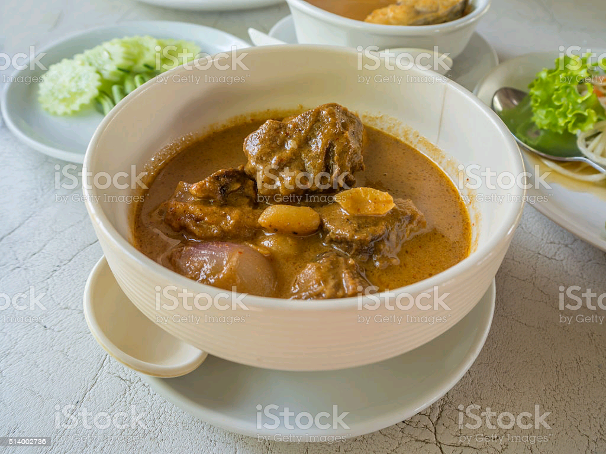

Ogbono Soup

Description
Ogbono Soup also known as draw soup is a common delicacy among the Western, Eastern and Southern people of Nigeria. It is usually consumed with either pounded yam, fufu or eba.
Ingredients
- Ogbono(grounded)
- Palm Oil
- Pumpkin Leaf
- Cow Beef
- Pepper(grounded)
- Smoked Fish
- Stock Fish
- Seasoning Cube
- Salt
Steps
- Cook the cow beef till soft, then wash the smoked fish and the stock fish.
- Slice the Pumpkin leaf, wash it properly and set aside.
- Place a pot of water on a gas cooker, leave to boil then add the pepper and palm oil and stir properly.
- Next add the ogbono and stir properly to mix it and to prevent formation of lumps.
- Add the cooked beef, smoked fish, stock fish and allow to cook for 15mins.
- Finally add the salt and Seasoning Cube and allow to cook for 10mins. . . Your soup is set for consumption.